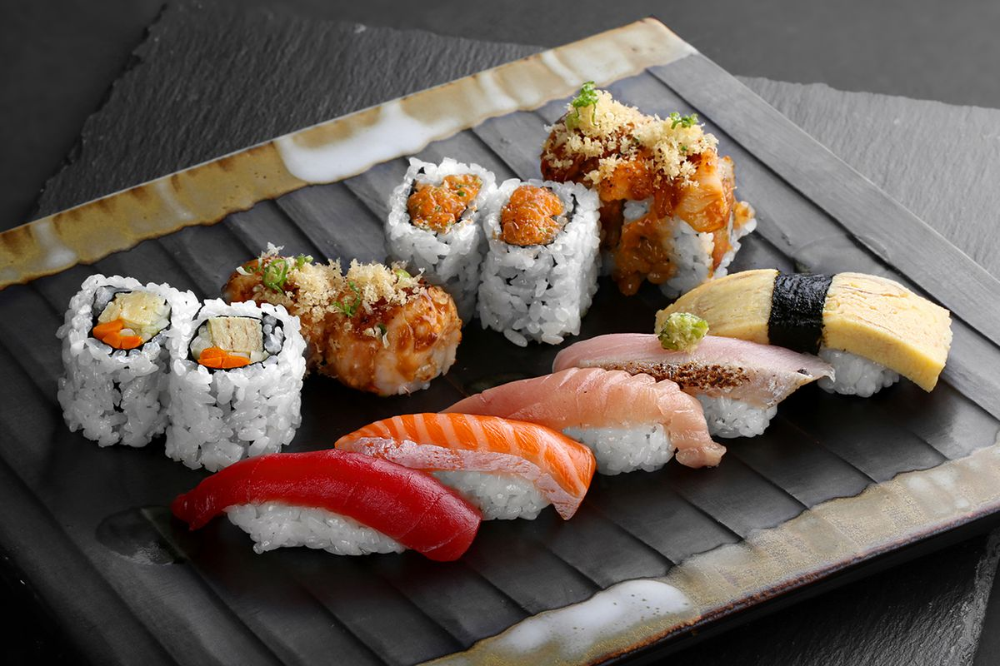

En Sushi Wiick nos enorgullecemos de ofrecer a nuestros clientes una auténtica experiencia culinaria japonesa, llevándolos en un viaje por los sabores exquisitos y la delicada artesanía del sushi. Inspirados por la tradición y la frescura de la cocina nipona, nuestro restaurante es un oasis gastronómico donde cada bocado es una celebración de la cultura y la excelencia.
En Sushi Wiick, entendemos que cada cliente tiene sus propias preferencias y gustos. Nuestro extenso menú ofrece una amplia variedad de opciones, desde los clásicos tradicionales hasta creaciones innovadoras que fusionan ingredientes frescos y sabores únicos. Cada rollo, es una danza de sabores y texturas diseñada para sorprender y deleitar los paladares más exigentes.
©SushiWiickDominoFartTerror